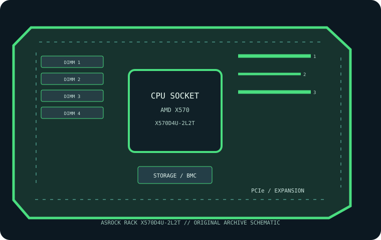

[ INDIVIDUAL COMPONENT // MOTHERBOARDS ]
ASRock Rack X570D4U-2L2T
AM4/X570 ATX server-workstation board with dual 10GbE, IPMI and ECC-capable UDIMM support. This record is restricted to the exact printed SKU; confirm the physical PCB revision before installation or firmware service.

MODEL / REVISION: X570D4U-2L2T is the exact manufacturer model/SKU documented here. Match the PCB revision and assembly label printed on the physical board before choosing firmware or CPU support; revision-specific differences must not be inferred from a similar model or suffix.
Specifications
| Exact board / SKU | ASRock Rack X570D4U-2L2T — exact product suffix retained; verify PCB revision from board silkscreen. |
|---|---|
| PCB revision | The manufacturer reference identifies this exact model SKU, not a single board assembly revision. Read the revision silk-screen on the physical PCB; no unverified revision number is assumed. |
| CPU socket / platform | One supported Ryzen AM4 processor; exact generations/core counts and BIOS floor are SKU-specific. |
| Chipset / controller | AMD X570 |
| Form factor | ATX. |
| Memory / ECC | Four DDR4 UDIMM sockets; ECC depends on CPU/platform and QVL. RDIMM unsupported; verify capacity and rate. |
| PCIe topology | Two CPU-connected PCIe 4.0 x16-length slots with electrical widths dependent on CPU, plus chipset expansion; consult sharing table. |
| Storage | Eight SATA 6 Gb/s ports and two M.2 sockets with socket-specific PCIe/SATA modes; verify lane sharing. |
| Network / BMC | Dual 10GbE (2L2T SKU); ASPEED AST2500 BMC with IPMI 2.0/KVM and dedicated management LAN. |
| Firmware / platform support | Use exact X570D4U-2L2T CPU list, BIOS and BMC firmware; do not substitute X570D4U or another suffix firmware. |
Compatibility and revision notes
Use exact X570D4U-2L2T CPU list, BIOS and BMC firmware; do not substitute X570D4U or another suffix firmware. Populate memory only in the documented module class and channel order; ECC does not make UDIMM/RDIMM classes interchangeable. Check chassis clearance, cooler, power connectors, risers, storage cabling and BMC network isolation against the model manual.
Socket shape and chipset branding alone do not guarantee CPU compatibility. Confirm exact CPU/stepping, minimum BIOS, memory QVL, PCIe lane sharing and board revision before service.
Preservation and repair
Record PCB silk-screen, serial label, BIOS/BMC versions, MAC addresses, attached risers and cables, and test conditions. Use ESD-safe handling and the vendor socket procedure; never apply firmware for a visually similar SKU.
Sources & further reading
- ASRock Rack X570D4U-2L2T — manufacturer product specificationsPrimary model-specific reference for board platform, memory, expansion and onboard features.
- ASRock Rack X570D4U-2L2T — manufacturer manual and support resourcesConsult matching manual, CPU/memory data and BIOS/BMC resources for exact product and PCB revision.
Manufacturer documentation for the exact product and printed PCB revision takes precedence over this summary.